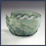
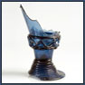
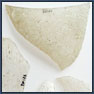
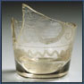

Varm- og kalddekorrering.
Glass kan dekoreres mens det er varmt og formbart eller når det ar avkjølt. Varmdekoreringsteknikker som er brukt på glass i denne utstillingen er optisk dekor, pålagt dekor, filigran- og isglassdekor. Kalddekoreringsteknikker som vi viser eksempler på er påmalt, slipt og gravert dekor.

Optisk dekor
Optisk dekor

Pålagt dekor
Pålagt dekor

Filigrandekor

Isglassdekor
Isglassdekor

Påmalt dekor

Slipt og gravert
Slipt og gravert